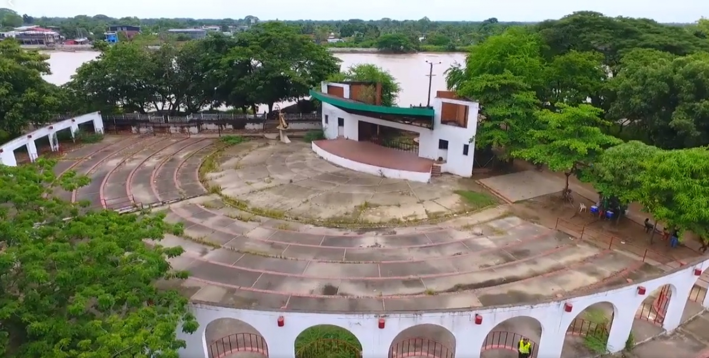

Sitios Turisticos📌
-
Puente Internacional José Antonio Páez

A cinco minutos de la capital del departamento, sobre el río Arauca, se encuentra ubicado el Puente Internacional José Antonio Páez, puente que une a las dos hermanas naciones de Colombia y Venezuela. Este puente fue construido por el gobierno venezolano durante los años de 1964 y 1967, constituyéndose en la principal ruta para el transporte de petróleo y el progreso del departamento de Arauca
-
Malecón

El Malecón se encuentra en la zona que limita con el hermano país de Venezuela, en el usted podrá recorrer un sendero que bordea el Arauca vibrador y podrá observar los islotes donde habitan los indígenas guahibos. El Malecón fue remodelado en el año 2002, para que los propios y extraños disfruten en mejores condiciones de este paisaje único.
-
Fórum Los Libertadores
La Concha acústica Fórum los libertadores es el lugar donde habitualmente se realizan los eventos culturales de la ciudad, ubicado en la zona del Malecón. En el Fórum se encuentra el monumento al joropo. Es un sitio que usted no debe dejar de visitar en su estancia en Arauca.